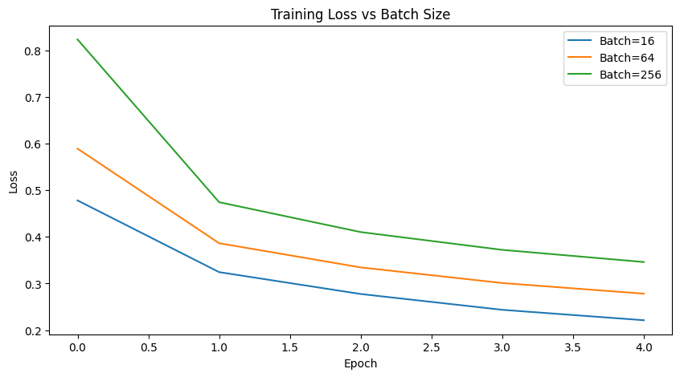

Does Size Matter? Exploring the Impact of Batch Size on Deep Learning Performance#

What is Batch Size?#
In deep learning, batch size refers to the number of training examples used to compute one update to the model’s weights during training.
Instead of updating weights after every single data point (stochastic) or after processing the entire dataset (full batch), we typically train using mini-batches.
In mini-batch gradient descent, the training data is divided into small batches:
where:
\( w_t \) = model parameters at iteration ( t )
\( \eta \) = learning rate
\( m \) = batch size
\( \nabla L_i(w_t) \) = gradient of the loss for the ( i^{th} ) sample in the batch
Purpose in Training Deep Learning Models#
Batch size controls the trade-off between stability and efficiency during optimization:
Batch Size |
Characteristics |
Pros |
Cons |
|---|---|---|---|
Small (e.g., 16–64) |
Noisy gradient updates |
Better generalization |
Slower convergence |
Medium (e.g., 128–256) |
Balanced updates |
Good trade-off |
Requires moderate memory |
Large (e.g., 512–1024+) |
Stable but less stochastic |
Faster training |
Risk of poor generalization |
Theoretical Effect on Model Performance#
Small batches (e.g., 16–64 samples) introduce more randomness in the gradient estimates because each batch is only a small subset of the dataset. This stochasticity can help the model escape shallow or poor local minima during training, potentially leading to better overall generalization on unseen data. However, the noisy updates may slow convergence and produce oscillations in the loss curve. Small batches are particularly useful for small to medium-sized datasets where generalization is more important than raw speed.
Large batches (e.g., 128–512 samples) produce smoother, more accurate gradient estimates because they average over a larger number of samples. This reduces the noise in updates, allowing the optimizer to make stable, consistent progress toward a minimum. Training is generally faster per epoch due to parallelization, but there is a risk that the model converges to sharp minima—narrow regions in the loss landscape—which may generalize less well to unseen data. Large batches are often used in large-scale datasets where computational efficiency is critical.
Extremely large batches (full-batch gradient descent) behave almost like deterministic gradient descent, where the gradient is computed over the entire dataset. This produces very smooth updates but removes almost all stochasticity, which can cause the model to get stuck in poor local minima. Extremely large batches often require learning rate scaling (e.g., linear scaling rule) or gradient accumulation strategies to maintain stable and effective training. While this approach can be computationally efficient, it may reduce the model’s ability to generalize compared to smaller, more stochastic batches.
Experiment Setup#
Dataset: FashionMNIST
Model: Simple CNN
Optimizer: Adam (lr = 0.001)
Variable: Batch size ∈ {16, 64, 256}
Epochs: 5
Metrics: Training Loss, Accuracy, Runtime
import torch
import torch.nn as nn
import torch.optim as optim
import torchvision
import torchvision.transforms as transforms
import matplotlib.pyplot as plt
import time
Dataset#
from torchvision.datasets import FashionMNIST
transform = transforms.Compose([transforms.ToTensor()])
trainset = FashionMNIST(root='./data', train=True, transform=transforms.ToTensor(), download=True)
testset = FashionMNIST(root='./data', train=False, transform=transforms.ToTensor(), download=True)
0%| | 0.00/26.4M [00:00<?, ?B/s]
0%|▏ | 32.8k/26.4M [00:01<21:33, 20.4kB/s]
0%|▎ | 65.5k/26.4M [00:02<15:42, 28.0kB/s]
0%|▍ | 98.3k/26.4M [00:04<23:23, 18.8kB/s]
0%|▋ | 131k/26.4M [00:06<23:13, 18.9kB/s]
1%|▊ | 164k/26.4M [00:08<23:19, 18.8kB/s]
1%|▉ | 197k/26.4M [00:11<28:49, 15.2kB/s]
1%|█▏ | 229k/26.4M [00:13<28:05, 15.5kB/s]
1%|█▎ | 262k/26.4M [00:15<29:56, 14.6kB/s]
1%|█▍ | 295k/26.4M [00:17<25:45, 16.9kB/s]
1%|█▋ | 328k/26.4M [00:19<26:17, 16.5kB/s]
1%|█▊ | 360k/26.4M [00:21<27:20, 15.9kB/s]
1%|█▉ | 393k/26.4M [00:23<28:20, 15.3kB/s]
2%|██▏ | 426k/26.4M [00:25<26:57, 16.1kB/s]
2%|██▎ | 459k/26.4M [00:27<24:19, 17.8kB/s]
2%|██▍ | 492k/26.4M [00:28<22:53, 18.9kB/s]
2%|██▋ | 524k/26.4M [00:29<20:24, 21.2kB/s]
2%|██▊ | 557k/26.4M [00:31<20:34, 20.9kB/s]
2%|██▉ | 590k/26.4M [00:32<18:34, 23.2kB/s]
2%|███▏ | 623k/26.4M [00:33<18:40, 23.0kB/s]
2%|███▎ | 655k/26.4M [00:35<20:12, 21.3kB/s]
3%|███▍ | 688k/26.4M [00:37<22:12, 19.3kB/s]
3%|███▋ | 721k/26.4M [00:39<24:09, 17.7kB/s]
3%|███▊ | 754k/26.4M [00:41<24:11, 17.7kB/s]
3%|███▉ | 786k/26.4M [00:43<23:23, 18.3kB/s]
3%|████ | 819k/26.4M [00:45<24:25, 17.5kB/s]
3%|████▎ | 852k/26.4M [00:47<26:53, 15.8kB/s]
3%|████▍ | 885k/26.4M [00:50<29:16, 14.5kB/s]
3%|████▌ | 918k/26.4M [00:52<28:40, 14.8kB/s]
4%|████▊ | 950k/26.4M [00:55<31:30, 13.5kB/s]
4%|████▉ | 983k/26.4M [00:58<34:03, 12.5kB/s]
4%|████▉ | 983k/26.4M [00:59<25:29, 16.6kB/s]
---------------------------------------------------------------------------
KeyboardInterrupt Traceback (most recent call last)
Cell In[2], line 5
1 from torchvision.datasets import FashionMNIST
3 transform = transforms.Compose([transforms.ToTensor()])
----> 5 trainset = FashionMNIST(root='./data', train=True, transform=transforms.ToTensor(), download=True)
6 testset = FashionMNIST(root='./data', train=False, transform=transforms.ToTensor(), download=True)
File ~\anaconda3\envs\DeepLearning\lib\site-packages\torchvision\datasets\mnist.py:100, in MNIST.__init__(self, root, train, transform, target_transform, download)
97 return
99 if download:
--> 100 self.download()
102 if not self._check_exists():
103 raise RuntimeError("Dataset not found. You can use download=True to download it")
File ~\anaconda3\envs\DeepLearning\lib\site-packages\torchvision\datasets\mnist.py:188, in MNIST.download(self)
186 url = f"{mirror}{filename}"
187 try:
--> 188 download_and_extract_archive(url, download_root=self.raw_folder, filename=filename, md5=md5)
189 except URLError as e:
190 errors.append(e)
File ~\anaconda3\envs\DeepLearning\lib\site-packages\torchvision\datasets\utils.py:388, in download_and_extract_archive(url, download_root, extract_root, filename, md5, remove_finished)
385 if not filename:
386 filename = os.path.basename(url)
--> 388 download_url(url, download_root, filename, md5)
390 archive = os.path.join(download_root, filename)
391 extract_archive(archive, extract_root, remove_finished)
File ~\anaconda3\envs\DeepLearning\lib\site-packages\torchvision\datasets\utils.py:127, in download_url(url, root, filename, md5, max_redirect_hops)
125 # download the file
126 try:
--> 127 _urlretrieve(url, fpath)
128 except (urllib.error.URLError, OSError) as e: # type: ignore[attr-defined]
129 if url[:5] == "https":
File ~\anaconda3\envs\DeepLearning\lib\site-packages\torchvision\datasets\utils.py:30, in _urlretrieve(url, filename, chunk_size)
28 with urllib.request.urlopen(urllib.request.Request(url, headers={"User-Agent": USER_AGENT})) as response:
29 with open(filename, "wb") as fh, tqdm(total=response.length, unit="B", unit_scale=True) as pbar:
---> 30 while chunk := response.read(chunk_size):
31 fh.write(chunk)
32 pbar.update(len(chunk))
File ~\anaconda3\envs\DeepLearning\lib\http\client.py:458, in HTTPResponse.read(self, amt)
455 if amt is not None:
456 # Amount is given, implement using readinto
457 b = bytearray(amt)
--> 458 n = self.readinto(b)
459 return memoryview(b)[:n].tobytes()
460 else:
461 # Amount is not given (unbounded read) so we must check self.length
462 # and self.chunked
File ~\anaconda3\envs\DeepLearning\lib\http\client.py:502, in HTTPResponse.readinto(self, b)
497 b = memoryview(b)[0:self.length]
499 # we do not use _safe_read() here because this may be a .will_close
500 # connection, and the user is reading more bytes than will be provided
501 # (for example, reading in 1k chunks)
--> 502 n = self.fp.readinto(b)
503 if not n and b:
504 # Ideally, we would raise IncompleteRead if the content-length
505 # wasn't satisfied, but it might break compatibility.
506 self._close_conn()
File ~\anaconda3\envs\DeepLearning\lib\socket.py:704, in SocketIO.readinto(self, b)
702 while True:
703 try:
--> 704 return self._sock.recv_into(b)
705 except timeout:
706 self._timeout_occurred = True
KeyboardInterrupt:
Model#
class SimpleCNN(nn.Module):
def __init__(self):
super(SimpleCNN, self).__init__()
self.conv = nn.Sequential(
nn.Conv2d(1, 16, 3, 1),
nn.ReLU(),
nn.MaxPool2d(2),
nn.Conv2d(16, 32, 3, 1),
nn.ReLU(),
nn.MaxPool2d(2)
)
self.fc = nn.Sequential(
nn.Flatten(),
nn.Linear(32*5*5, 128),
nn.ReLU(),
nn.Linear(128, 10)
)
def forward(self, x):
return self.fc(self.conv(x))
Training Function#
def train_model(batch_size):
trainloader = torch.utils.data.DataLoader(trainset, batch_size=batch_size, shuffle=True)
testloader = torch.utils.data.DataLoader(testset, batch_size=batch_size, shuffle=False)
model = SimpleCNN()
criterion = nn.CrossEntropyLoss()
optimizer = optim.Adam(model.parameters(), lr=0.001)
train_loss, train_acc = [], []
start_time = time.time()
for epoch in range(5):
correct, total, running_loss = 0, 0, 0.0
for images, labels in trainloader:
optimizer.zero_grad()
outputs = model(images)
loss = criterion(outputs, labels)
loss.backward()
optimizer.step()
running_loss += loss.item()
_, predicted = torch.max(outputs, 1)
total += labels.size(0)
correct += (predicted == labels).sum().item()
train_loss.append(running_loss / len(trainloader))
train_acc.append(100 * correct / total)
runtime = time.time() - start_time
return train_loss, train_acc, runtime
Experiment#
batch_sizes = [16, 64, 256]
results = {bs: train_model(bs) for bs in batch_sizes}
Plot Loss#
plt.figure(figsize=(10,5))
for bs in batch_sizes:
plt.plot(results[bs][0], label=f'Batch={bs}')
plt.title('Training Loss vs Batch Size')
plt.xlabel('Epoch')
plt.ylabel('Loss')
plt.legend()
plt.show()

Plot Accuracy#
plt.figure(figsize=(10,5))
for bs in batch_sizes:
plt.plot(results[bs][1], label=f'Batch={bs}')
plt.title('Training Accuracy vs Batch Size')
plt.xlabel('Epoch')
plt.ylabel('Accuracy (%)')
plt.legend()
plt.show()

Plot Runtime Summary#
for bs in batch_sizes:
print(f"Batch Size {bs}: Runtime = {results[bs][2]:.2f} sec, Final Acc = {results[bs][1][-1]:.2f}%")
Batch Size 16: Runtime = 232.77 sec, Final Acc = 91.66%
Batch Size 64: Runtime = 161.03 sec, Final Acc = 89.80%
Batch Size 256: Runtime = 142.28 sec, Final Acc = 87.62%
Results and Analysis#
Batch Size |
Final Accuracy |
Training Runtime (sec) |
Behavior and Interpretation |
|---|---|---|---|
16 |
91.66% |
232.77 |
Small batches introduce greater gradient noise, which helps the model generalize better by escaping sharp local minima. However, the high variability in updates makes training slower. |
64 |
89.80% |
161.03 |
Medium-sized batches provide a balance between stability and stochasticity. The gradient estimates are smoother, resulting in faster convergence but slightly reduced generalization. |
256 |
87.62% |
142.28 |
Large batches produce near-deterministic gradient updates, leading to faster training but poorer generalization due to convergence toward sharp minima. These often require learning rate scaling to maintain performance. |
As batch size increases, training becomes faster but at the cost of reduced model accuracy. Smaller batches, while computationally expensive, inject beneficial noise into the optimization process—helping the model explore the loss surface more effectively and avoid overfitting to local minima. Conversely, very large batches lead to smoother, more stable gradient estimates but risk converging to sharp minima, making the model less robust to unseen data.
Insights for Future Model Tuning#
This experiment shows that batch size directly affects the balance between speed and generalization. Smaller batches yield better generalization due to gradient noise, while larger batches train faster but risk poorer minima. Choosing an optimal batch size is a key step in hyperparameter tuning for deep learning.
For small datasets, small or medium batches (16–128) tend to generalize better.
For large-scale datasets, larger batches improve computational efficiency.
Combine with learning rate scaling or gradient accumulation to maintain stability.
Always visualize loss curves — noisy curves suggest smaller batches, smooth curves larger ones.
References#
Goodfellow, I., Bengio, Y., & Courville, A. (2016). Deep Learning. MIT Press.
Keskar, N. S., et al. (2017). On Large-Batch Training for Deep Learning: Generalization Gap and Sharp Minima. ICLR.
PyTorch Official Tutorials: https://pytorch.org/tutorials/